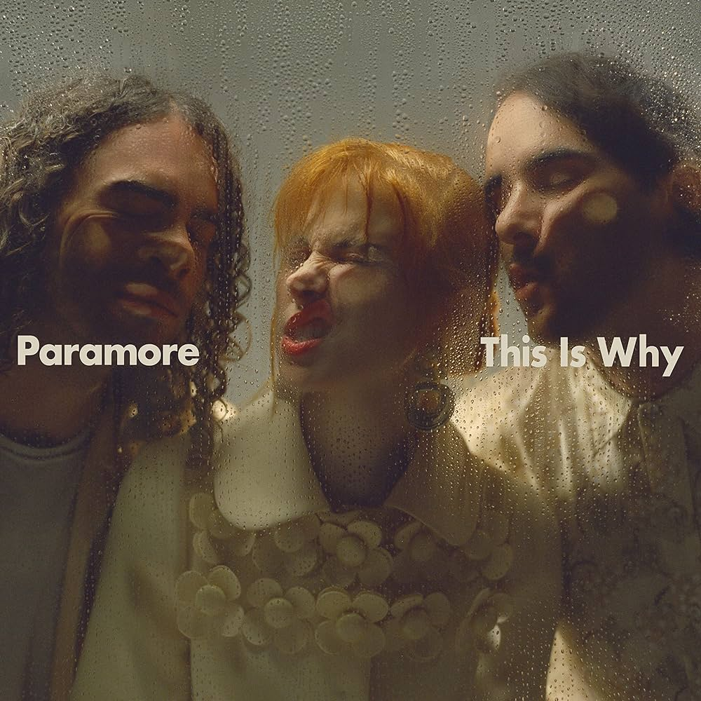
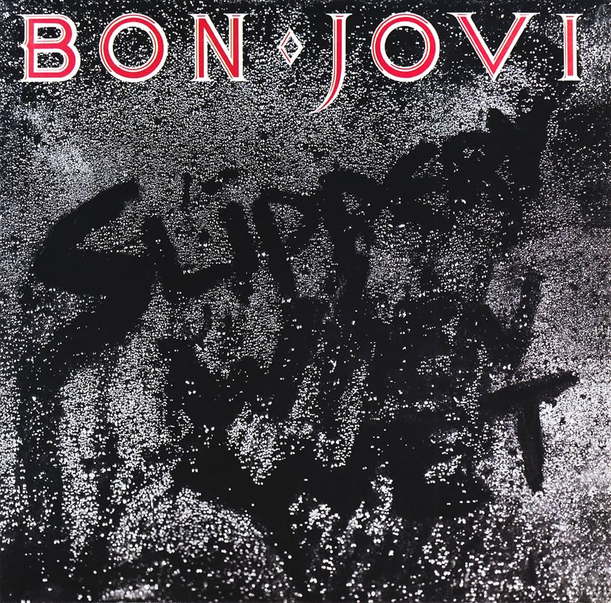

Hi, I'm Carlos! Born and raised in New Jersey.
I am currently an upcoming junior at Frank J. Cicarell
Academy Elizabeth High School in Elizabeth, NJ.
In my free time, I really enjoy listening to my favorite music,
reading books, and learning about space. Thanks to All Star Code,
I now have the skills to develop this website! Check out my LinkedIn and GitHub
to see what other stuff I have done! This website will mostly be on my hobbies.
Main Stats:
GPA: 4.1551 Unweighted | 4.8811 Weighted
Rank: 1/310
ACT Score: 28/36 (I will be retaking it this September)
Here are some AP Classes I have taken!
AP Computer Science Principles (2022-2023) (Freshman year)
Score: 3
AP Precalculus (2023-2024) (Sophomore Year)
Score: 5
AP Psychology (2023-2024) (Sophomore Year)
Score: 4
Here are some classes (non-AP) that I have taken
2022-2023 (Freshman year)
Algebra II Honors
English I Honors
Italian I
Physical Education Health I
Physics Honors
World History Culture Honors
2023-2024 (Sophomore Year)
Chemistry Honors
English II Honors
Physical Education Health II
US History I Honors
Here are some classes that I will take in the upcoming 2024-2025 (Junior) school year!
AP Calculus BC
AP Chemistry
AP English Language
AP Italian
AP United States History
Biology Honors
Physical Education Health III
For my 2025-2026 year (Senior), I anticipate taking:
Calc III Dual Enrollment
AP Physics
AP Computer Science A
AP Economics
AP English Literature
Physical Education Health IV
Being a member of Odyssey of the Mind is really fun! Odyssey of the Mind targets to help kids
build their problem solving skills, engineering skills, and presentational skills.
Through my school, teammates, and tons of hours put into work, my team and I were able to go to Iowa State University to go compete globally with people from many countries. After getting 1st place in the NJ regional competition, and then 2nd place in the NJ state competition, we were able to move on to the global competition!
My team specializes in vehicle engineering, so we competed for the Drive-In Movie Theatre challenge.
Some pictures of my team and I!
Music
Favorite Bands:
New Order
Joy Division
Depeche Mode
Fleetwood Mac
Led Zeppelin
The Doors
Paramore 
Favorite Songs:
Grace - Jeff Buckley
Play To Listen
Go With The Flow - Queens of the Stone Age
Play To Listen
This Is Why - Paramore
Play To Listen
Blue Monday - New Order
Play To Listen
Never Let Me Down Again - Depeche Mode
Play To Listen
Love Will Tear Us Apart - Joy Division
Play To Listen
Rhiannon - Fleetwood Mac
Play To Listen
Light My Fire - The Doors
Play To Listen
Favorite Artists:
Jeff Buckley
Clairo
Bon Jovi 
Bob Dylan
Tame Impala
Chet Baker
Laufey
Books
I really enjoy reading classic novels and sci-fi books! Be aware for potential spoilers.
Crime and Punishment - Fyodor Dostoevsky
A very psychological and thought provoking book about a man who impulsively murders a person with an axe. Reading this had me on the edge of my seat!
We - Yevgeny Zamyatin
Thought to be the original inspiration behind George Orwell's "1984". This book has a lot of dystopian vibes to it as the people within this book live within a walled-totalitarian government led city where the government surveillances and monitors people 24/7.
The Secret History - Donna Tartt
A group of college kids lose their marbles in the snow and commit crimes. More of a detective style book, but I managed to read it within two days since it was that good!
Tender Is The Flesh - Agustina Bazterrica
All of the world's meat became inedible for humans, so what's the solution you might ask? Make special versions of humans just to replace the meat with! This idea had me intrigued but grossed out when I first started to read the book. However, the story soon became thrilling with lots of action and suspense.
Project Hail Mary - Andy Weir
A distant star is dimming rapidly at an alarming rate. Scientists on earth are confused as to why this is happening, but it turns out that it's a new species of organisms that live in stars. These new species are infesting nearby stars, and it's only a matter of time before Earth's Sun gets infected. This book made me forget that I was reading since it felt like watching a movie; so good.
The Three Body Problem - Cixin Liu
A Chinese novel where a woman makes the first contact with aliens in all of human history. From a single push of a button to send a message, she triggers a crazy sequence of events and eventually leads to the aliens creating a high-dimensional particle to monitor humans on Earth using quantam entaglement. These aliens also make a VR-like headset for humans to play levels to see how the alien's were affected by their three stars leading into "Chaotic Eras". Currently reading the second book in the series and it's just as good!
Space
Black Holes
Ever since I heard about black holes I always wanted to know what happens inside one. A point of mass, practically infitely small and with the mass of hundreds of thousands or even millions of suns is very interesting. I remember when the first image of an actual black hole first came out and I was just in awe.
James Webb Space Telescope
Being alive when extreme high quality images of distant old galaxies and other space objects is eye-opening. Everytime a new image releases from this telescope, it never fails to amaze me.